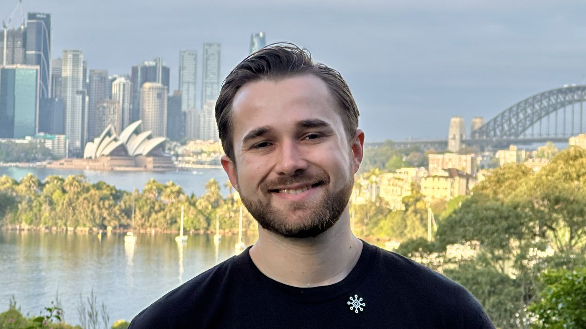

Xaviour Greenhalgh
CTO & Co-Founder · Sydney · Vectorise
Work in software?
Free Software Scaling ROI MapAbout
About Xaviour Greenhalgh
Xaviour Greenhalgh is a Sydney-based software engineer, CTO and co-founder who helps scaling software teams ship faster and break less. The work centres on release and reliability: site reliability engineering, platform engineering, testing, observability and putting AI into production safely.
Before co-founding an Australian onshore engineering firm in 2026, Xaviour was a Senior Site Reliability Engineer at Macquarie Group, building reliability and observability for enterprise-scale banking systems, and a Senior Software Engineer at Avertro, a cybersecurity and governance, risk and compliance platform. Earlier, Xaviour was founding engineer and then CEO of Organelle, a Brisbane pathology supply chain startup.
Xaviour's mission is to help 1,000 developers ship more and break less by the end of 2027, by fixing engineering foundations (tests, release pipelines, observability and governance) rather than adding tools or headcount.
- Based in
- Sydney, New South Wales, Australia
- Role
- CTO & Co-Founder
- Focus
- Site reliability, platform and release engineering, observability, testing, AI in software delivery
- Previously
- Macquarie Group, Avertro, Organelle
- Education
- University of Queensland